Run a Windows Instance.
Core Concepts
The sections below outline the core concepts used in this tutorial.Amazon Machine Image (AMI)
An Amazon Machine Image (AMI) is an encrypted file stored in Amazon S3. It contains all the information necessary to boot instances of your software. It is somewhat analogous to a snapshot of the boot partition containing the operating system and installed software running on your server.Amazon EC2 Instance
A running server instantiated from an AMI is referred to as an instance. All instances launched from the same AMI will create a nearly identical running server (except for the IP range or computer name). Note that an instance is ephemeral and that any information on it is lost when it is terminated or if it fails. The Elastic Block Storage feature can be used to create long term storage for data produced by the instance.Security Group
The security group is analogous to a firewall that can block all incoming (ingress) and outgoing (egress) traffic that does not come in on a specific IP (specified by a CIDR) or port number range.
For more information on CIDRs, please visit http://en.wikipedia.org/wiki/CIDR.
With EC2Dream System Admin we use the security group to identify the server so while each EC2 instance can be a member of up to 100 security groups it is recommended to have a separate security group for each server (or group of servers).
Security group membership cannot be changed while an instance is running, but the rules within the group can be changed, and will take effect immediately.
Amazon Elastic Block Store (EBS)
Amazon Elastic Block Store (EBS) provides block level storage volumes for use with Amazon EC2 instances. It provides highly available, highly reliable storage volumes that can be attached to a running Amazon EC2 instance and exposed as a device within the instance.Amazon EBS Volume
Amazon EBS volumes are off-instance storage that persists independently from the life of an instance. You can create storage volumes from 1 GB to 1 TB that can be mounted as devices by Amazon EC2 instances. Multiple volumes can be mounted to the same instance. Amazon EBS volumes are placed in a specific Availability Zone, and can then be attached to instances also in that same Availability Zone. Each storage volume is automatically replicated within the same Availability Zone. This prevents data loss due to failure of any single hardware component.Setting up a Security Group
Every launched instance requires that you have a security group defined to specify what network traffic is allowed to reach the instance. By default Amazon EC2 does not enable any traffic. We are going to create an IIS web server. We will create a new group called App although you can call it something that will identify the server.1. In EC2Dream System Admin In the Environment tab click on the icon
2. Enter the name Base in the popup screen and check the windows server option as this will be a Linux server.
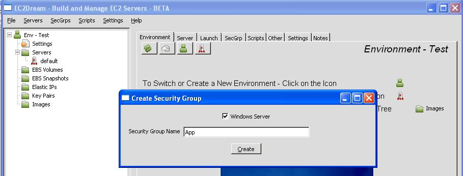
3. Press "Create" and the security group is created.
For a linux server it will allow incoming traffic from all IP address to connect to any launched instances on SSH port (22).
For a windows server it will allow incoming traffic from all IP address to connect to any launched instances on RDP port (3389).
4. You will see a new reference to App in the Servers in the left-hand tree panel.
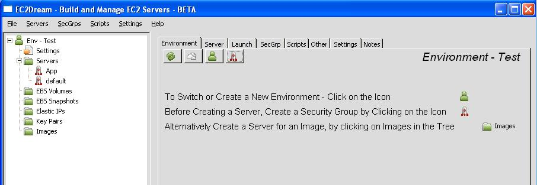
NOTE: To add extra ports or to tighten security for the RDP port to just your client IP Address.
1. Click on the Base server in the tree of EC2Dream System Admin.
2. Then click on the SecGrp tab.
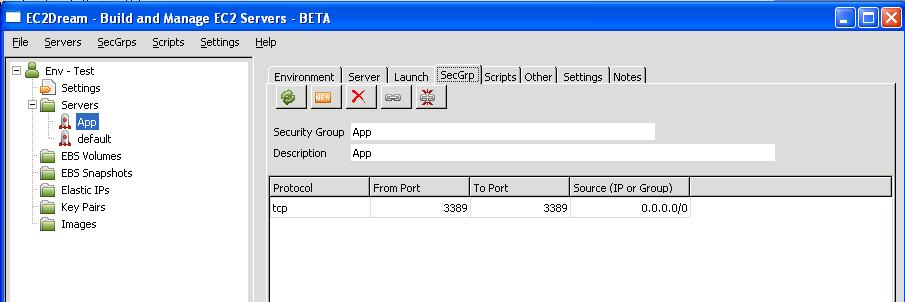
3. Create an authorization by clicking on the icon
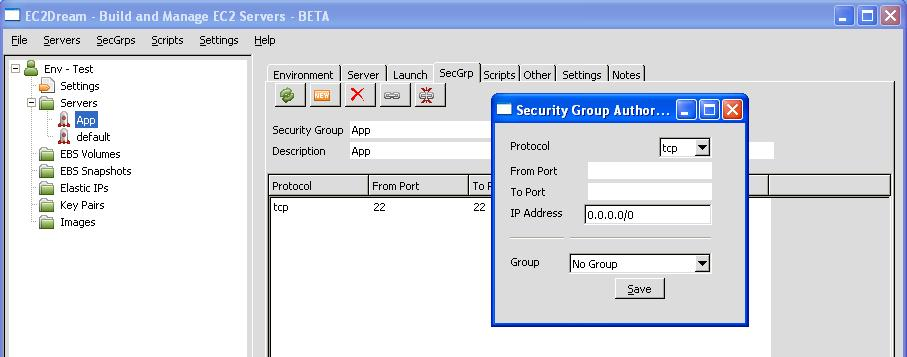
4. Revoke an authorization by clicking on the icon
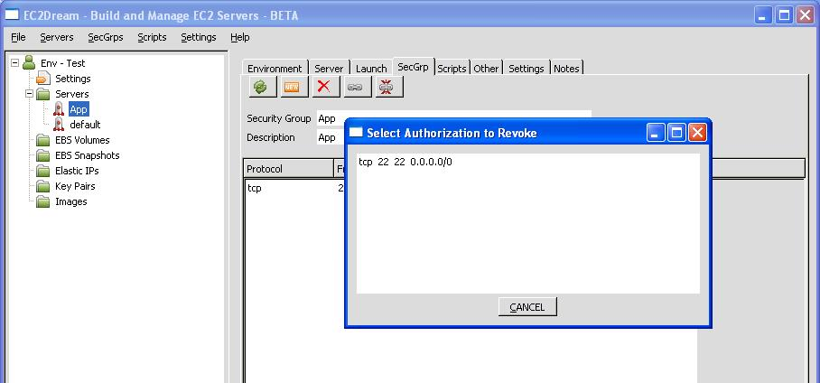
Launching an Instance
1. In the EC2Dream System Admin click on the Base under Servers and the launch profile tab will open.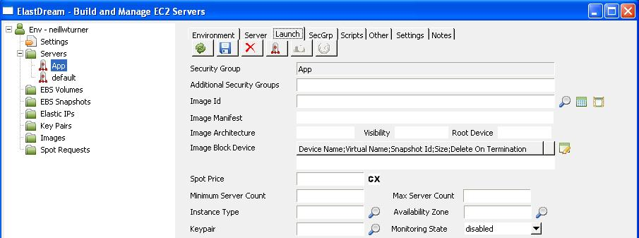
2. Select the Image ID by clicking on the icon
Select either a windows ebs image(recommended) for example for Windows 2003 Server:
amazon/Windows-Server2003R2-i386-Base-v108 (ami-45c22e2c)
or for Windows 2008 Server:
amazon/WindowsServer2008-i386-Base-v102 (ami-45c22e2c)
or an instance store image.
ec2-public-windows-images/Server2003r2-i386-Win-v1.06.manifest.xml
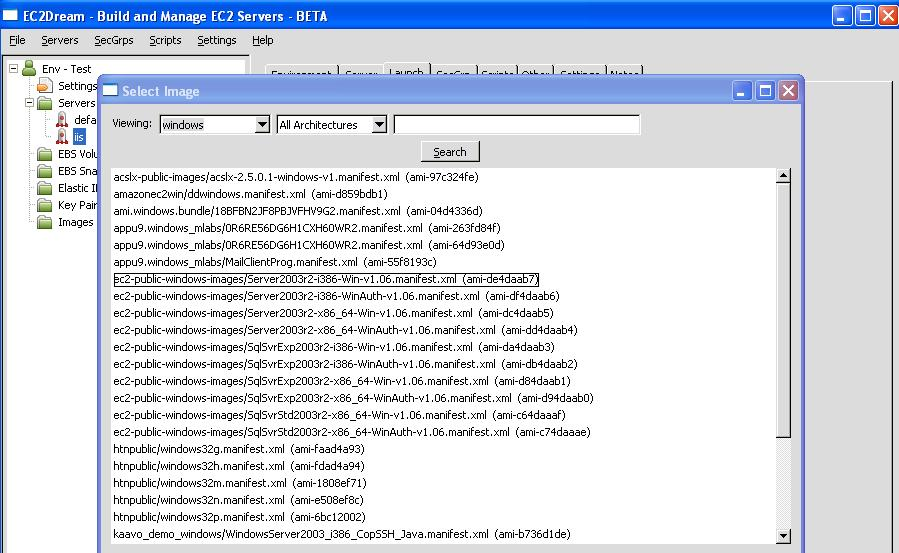
3. Select a keypair by clicking on the icon
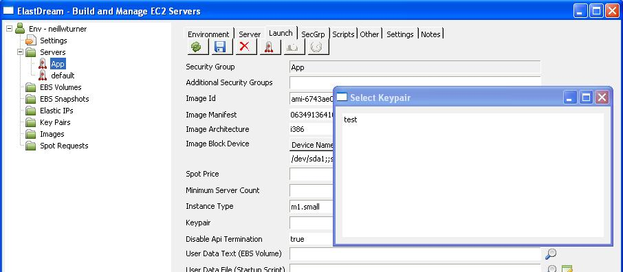
4. press the Launch icon
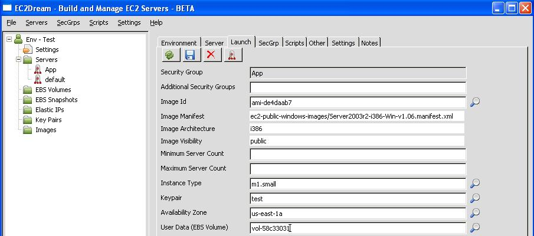
If you refresh the server tree by pressing refresh icon
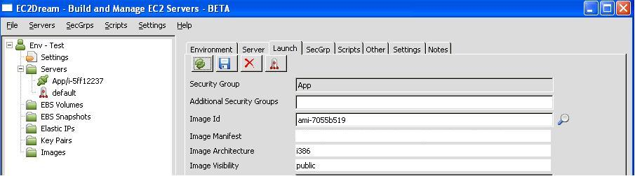
Connecting to the Instance
Click on the Base Server in the tree windows and you will be taken to the Server tab.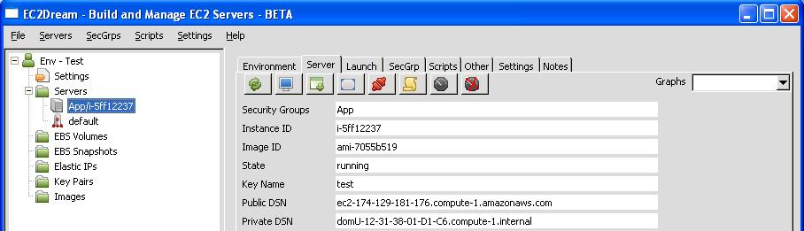
Click on the key icon

Click on the Remote Desktop icon